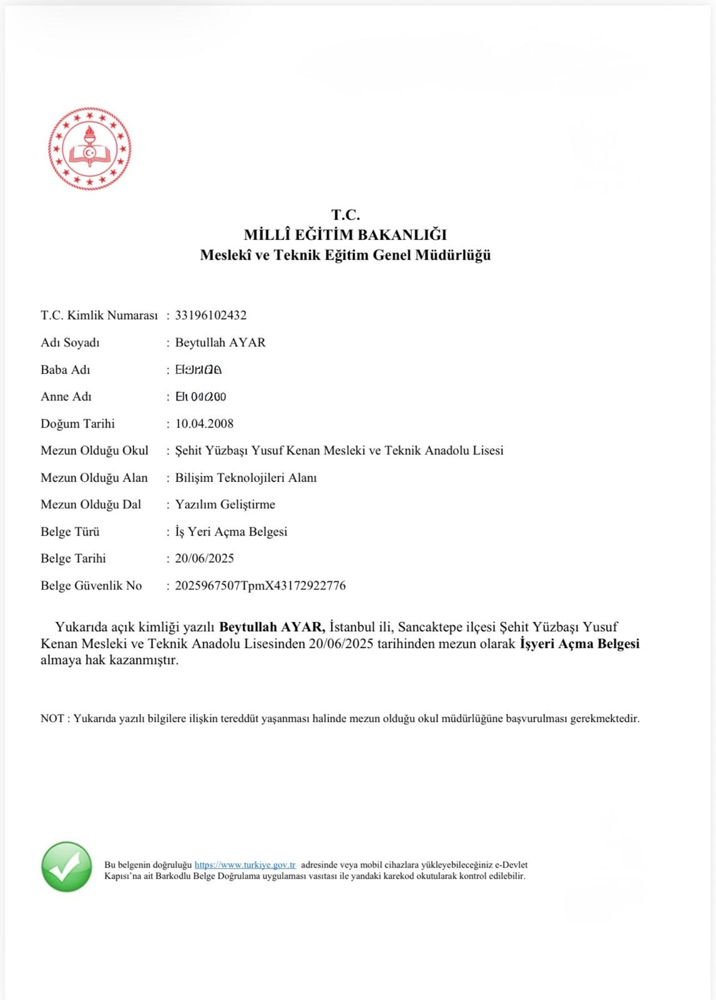
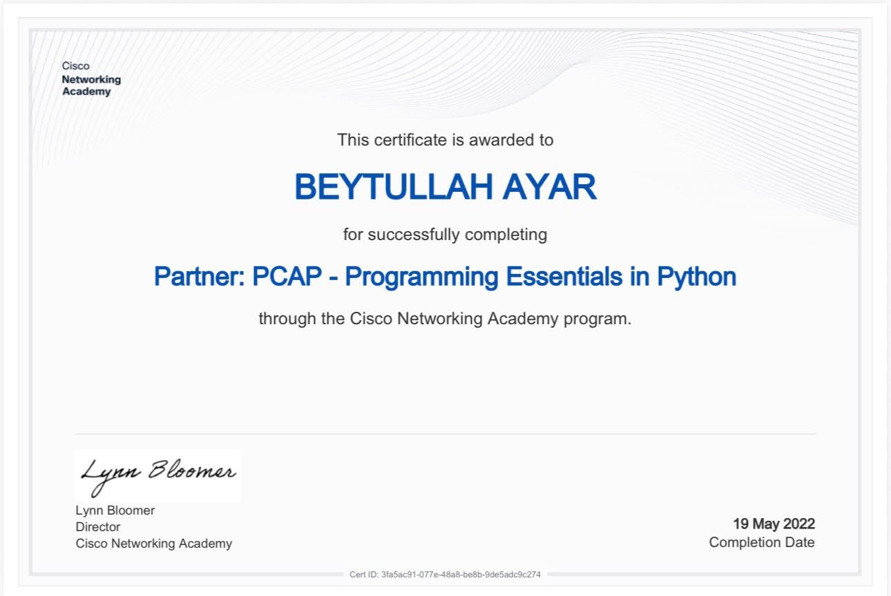
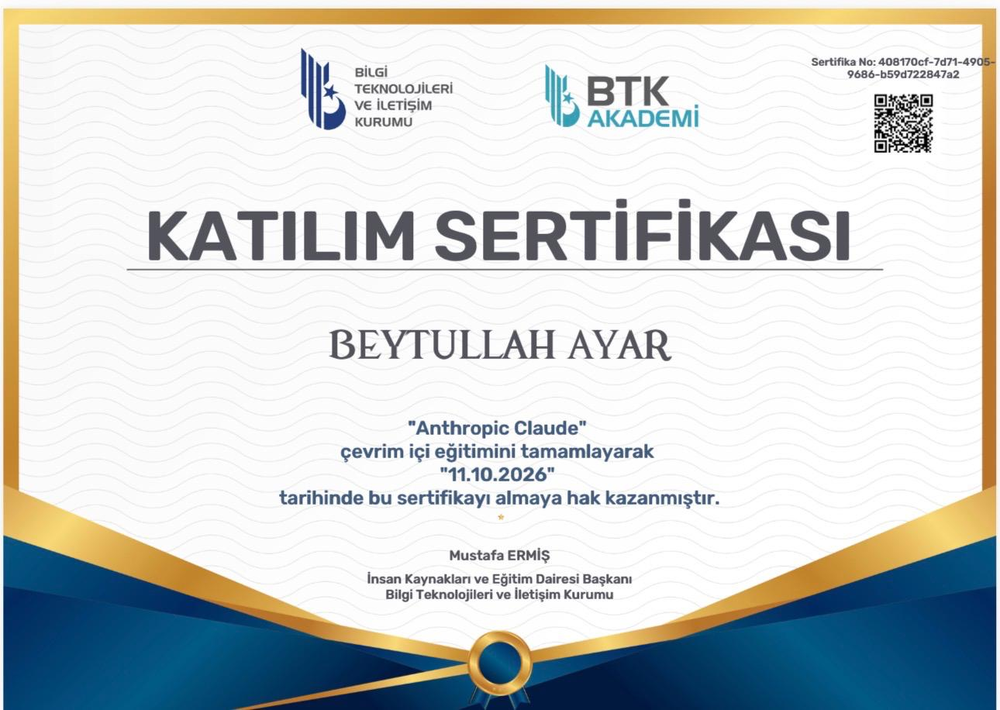
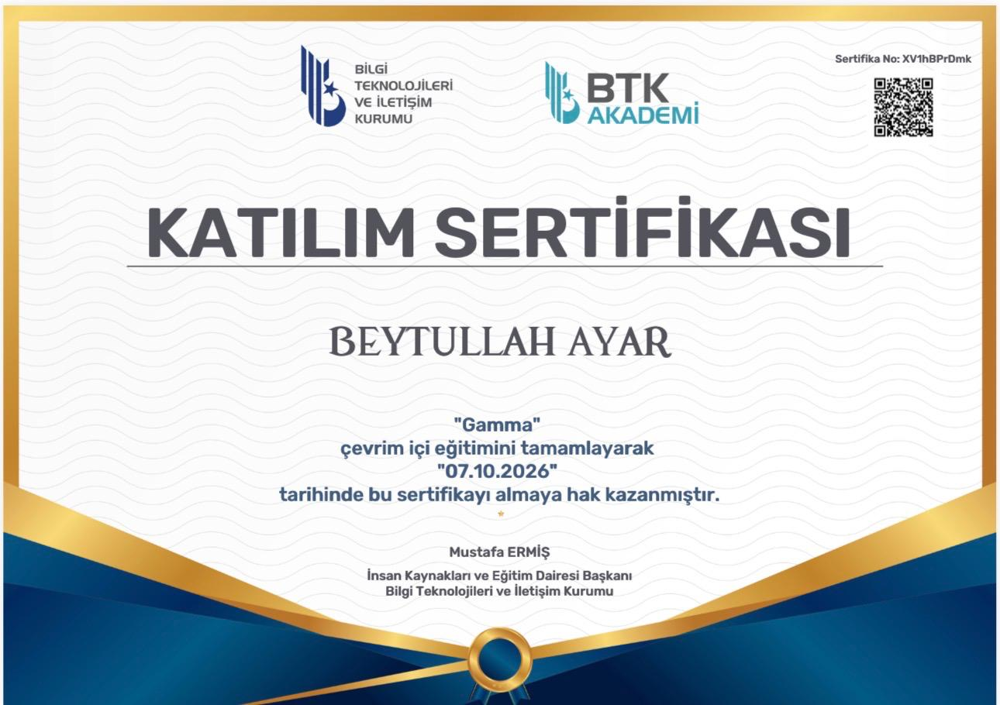
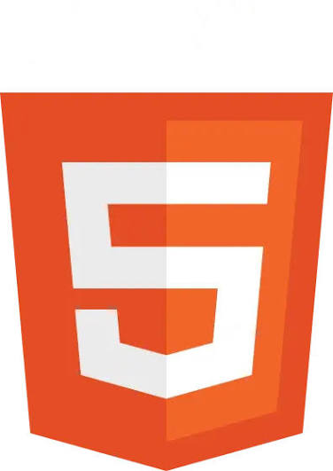
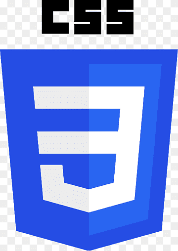
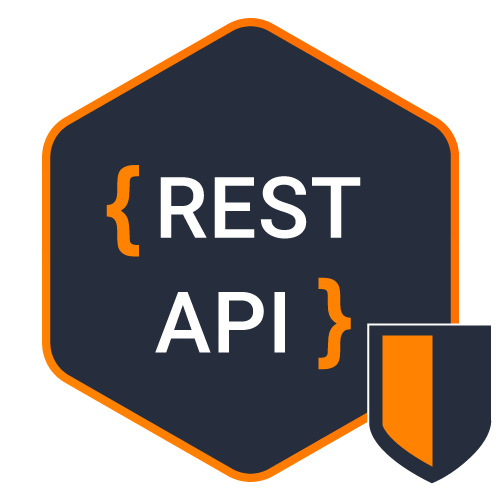

Weather App
Type a city and see the current weather.
Sends a request to a weather API with fetch, waits with async/await and shows temperature, conditions and wind. Shows a clear message if the city is not found or the request fails.
Available for work · Netherlands
Junior Programmer
I'm Beytullah Ayar, 18, a Web Design and Coding student at Bingöl University. I build responsive websites and API-driven apps with HTML, CSS and JavaScript, and I put them online so people can use them.
Selected works
Explore my projects, certificate and technical skills.
Type a city and see the current weather.
Sends a request to a weather API with fetch, waits with async/await and shows temperature, conditions and wind. Shows a clear message if the city is not found or the request fails.
Convert currencies with today's rates.
Loads live exchange rates from an API and calculates the result from the amount and the two currencies you pick. Input is checked before converting.
A live website for a patisserie shop in Rotterdam.
A fully responsive site with a dark glass-style design, built remotely for a real client and in active use today. I handled the requirements, layout and deployment.
E-commerce catalogue with a cart.
A product list with a cart saved in localStorage, so it survives a reload.





HTML5
CSS3 JavaScript
JavaScript
REST · Fetch Git · GitHub
Git · GitHub Python
PythonCareer path
Sep 2023 – Jun 2025
Şehit Yüzbaşı Yusuf Kenan Vocational and Technical Anatolian High School
Sep 2024 – Jun 2025 · Teknofix, Istanbul
Help desk and field support, hardware troubleshooting, network cabling, Windows support.
Jun 2025
IT & Software, T.C. Ministry of National Education.
Sep 2026 – Present · Remote
Built and deployed a responsive live website for a patisserie shop in Rotterdam, working remotely.
Sep 2026 – Jun 2028
Associate degree, Web Design and Coding.
Resume
Junior Frontend / Web Developer
Junior web developer with hands-on experience building responsive websites and API-driven web applications using HTML5, CSS3 and JavaScript (ES6+). Delivered a live website for a patisserie shop in Rotterdam, Netherlands, working remotely as a freelance developer. Previous experience in IT support and help desk. Seeking an internship or junior developer position in the Netherlands.
Front end: HTML5, CSS3, responsive web design, JavaScript (ES6+), DOM manipulation
APIs and data: REST API, Fetch API, JSON, async/await
Tools: Git, GitHub, GitHub Pages, Python, browser developer tools
IT support: Help desk, technical support, hardware troubleshooting, hardware installation, network cabling, Windows OS, field support
Freelance Web Developer
IT Support / Help Desk Technician (Intern)
Associate Degree, Web Design and Coding
High School Diploma, Information Technologies – Software
Official Business Opening & Trade Certificate (Information Technology & Software), T.C. Ministry of National Education, Jun 2025
Contact
I plan to apply for a Dutch visa this winter. If you are hiring for an internship or junior role, write to me.